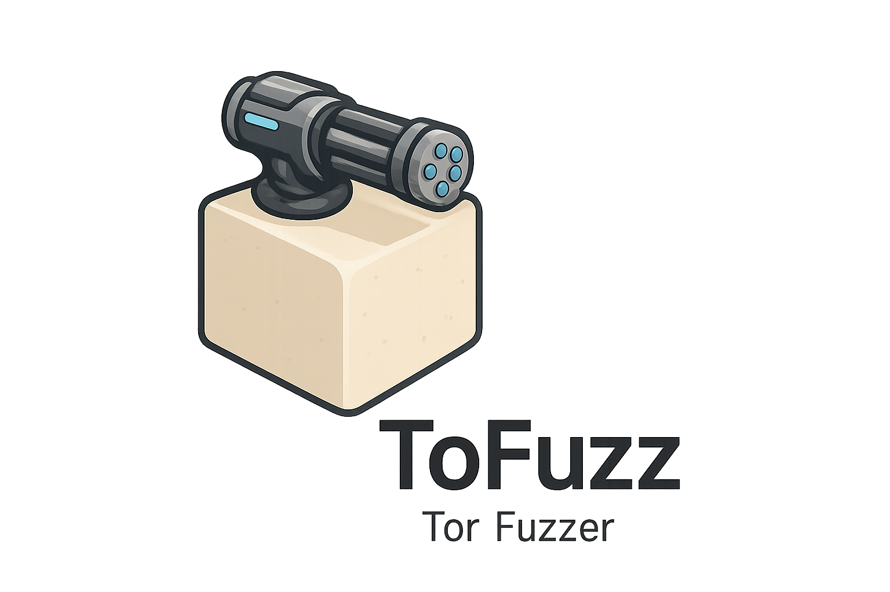

ToFuzz#
- 
ToFuzz is an opensource Fuzzing tool able to use the tor network to limit the footprint on the targetted server and escape the attack detection by IP Filter.
Installation#
pip install .Help#
$ tofuzz -h
___________ _____
\__ ___/____/ ____\_ __________________
| | / _ \ __\ | \___ /\___ /
| |( <_> ) | | | // / / /
|____| \____/|__| |____//_____ \/_____ \
\/ \/
usage: ToFuzz [-h] [-X METHOD] -u URL [-H HEADERS] [-b BODY] -w WORDLIST [--fuzztoken FUZZTOKEN] [-t THREADS] [-v]
[-T] [--tor-host TOR_HOST] [--tor-port TOR_PORT]
ToFuzz – is a multi-threaded fuzzing tool which allow users to use tor network.
options:
-h, --help show this help message and exit
-X, --method METHOD HTTP method to use (default: GET)
-u, --url URL Target URL with FUZZ token
-H, --headers HEADERS
HTTP headers as JSON string
-b, --body BODY HTTP body as raw string or JSON string
-w, --wordlist Path to the wordlist to use (Will be automatically splitted by thread)
Path to wordlist file
--fuzztoken FUZZTOKEN
Token to replace in URL/body (default: FUZZ)
-t, --threads THREADS
Number of threads
-v, --verbose Verbose Mode
-T, --tor Use Tor network
--tor-host TOR_HOST Tor SOCKS5 proxy host (default: 127.0.0.1)
--tor-port TOR_PORT Tor SOCKS5 proxy port (default: 9050)Simple usage with GET request :
tofuzz -X GET -u http://www.myapp.com?q=FUZZ -w .\tofuzz\resources\test_wordlist.txt --threads 5
___________ _____
\__ ___/____/ ____\_ __________________
| | / _ \ __\ | \___ /\___ /
| |( <_> ) | | | // / / /
|____| \____/|__| |____//_____ \/_____ \
\/ \/
METHOD : GET
URL : http://www.myapp.com?q=FUZZ
WORDLIST : .\tofuzz\resources\test_wordlist.txt (15)
FUZZ URL : True
FUZZ BODY : False
--------------------------------------------------
PAYLOAD=BBBBBBBBBB | HTTP 200 | len = 17676
PAYLOAD=CCCCCCCCCCCCCCCCCCCC | HTTP 200 | len = 17263
PAYLOAD=AAAAA | HTTP 200 | len = 17671
PAYLOAD=EEEEEEEEEE | HTTP 200 | len = 17216
PAYLOAD=DDDDD | HTTP 200 | len = 17678
PAYLOAD=CCCCCCCCCC | HTTP 200 | len = 17612
PAYLOAD=DDDDDDDDDDDDDDDDDDDD | HTTP 200 | len = 17221
PAYLOAD=EEEEE | HTTP 200 | len = 17604
PAYLOAD=AAAAAAAAAAAAAAAAAAAA | HTTP 200 | len = 17670
PAYLOAD=BBBBB | HTTP 200 | len = 17681
PAYLOAD=DDDDDDDDDD | HTTP 200 | len = 17711
PAYLOAD=EEEEEEEEEEEEEEEEEEEE | HTTP 200 | len = 17295
PAYLOAD=AAAAAAAAAA | HTTP 200 | len = 17222
PAYLOAD=CCCCC | HTTP 200 | len = 17177
PAYLOAD=BBBBBBBBBBBBBBBBBBBB | HTTP 200 | len = 17686
Terminated with success
Execution time : 0.17 secondsTor Usage#
To use this fuzzer with tor :
- Start Tor Browser with the proxy
- Add the arguments to commandline
--tor - start the fuzzing